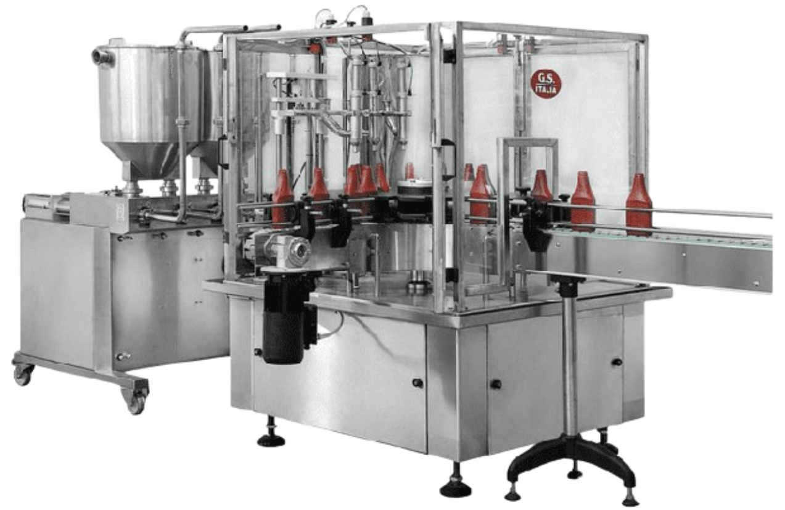
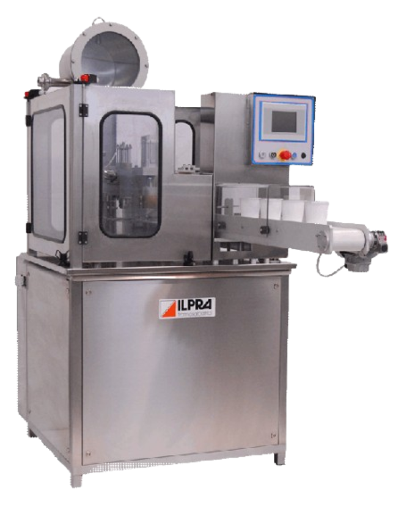
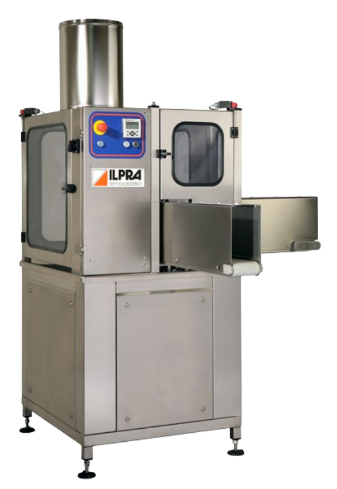

Topsipudeli pakendamine
Pakkimisliiniga
GS ITALIA RFL
GS Italia automaatsed pakkimisliinid võimaldavad kasutada erinevaid tooteid (vedelad, paksud, tahked) ja mitmesuguseid pakendeid (klaas, plastik, metall).

Vastavalt kliendi vajadustele saab liini varustada mitmesuguste seadmetega:
Pöörlev tühjade pakendite puhverjaam
Pakendite sisestusjaam transportööriga
Pöörlev nelja tööjaamaga pakkimislaud
Doseerimisjaam
Korkimise ja kaitsekiletuse jaam
Võimalik on ka induktsioonkeevitus, milles kasutatakse korkide all oleva fooliumi keevitamist pakendile
Dosaator võib olla otse ühendatud segamismasina ja mahutiga.
Võimalik on ka etiketeerimise ja markeerimise süsteem liinil.
Kiirus kuni: 1800 pakendit / tunnis
Rohkem infot: GS ITALIA RFL
ILPRA FS 2000
ILPRA Fill Seal 2000 on karussell-lauaga automaatne pakkimismasin topside pakendamiseks. Võimalik on pakendada erinevatest materjalidest topse ja täita voolavate, pusiteliste või tükiliste toodetega. Pakkimise kiirus on kuni 2000 pakendit tunnis.

Kasutatava pakendi materjal võib olla plastikust, klaasist, metallist või mõnest muust termiliselt suletavast materjalist. Masin sobib tööks toiduainetetööstusesse ja meditsiiniliste toodete pakendamiseks tänu kõrgele hügieenile. Masin täidab automaatselt pakendid tootega, keevitab sobiva kattematerjalihga rullist ja väljastab pakendid.
Võimalik on toodete markeerimine (parim enne jne). Tootlikkus on kuni 1500 pakendit tunnis. Masinat iseloomiustab hea kompaktsus, töökindlus ja soodne hind.
SB 160 on valmistatud roostevabast terasest ja omab ohutusklassi IP 65. Puhastamine ja hooldus on lihtne. Digitaalse juhtpaneeli abil on lihtne seadistada tööprotsessi. Doseerimine ja keevitus on pneumaatiline ja kõik muud liikumised on mehaanilise ülekandega. Masin on võimalik valmistada täpselt kliendi toote järgi.
ILPRA SB 160
Seal Box 160 mudel on täisautomaatne nelja tööjaamaga pakkimismasin topside ja pudelite pakendamiseks. Sellel masinal kasutatavad pakendid ei ole reeglina üksteise sisse paigaldatavad ja seetõttu on pakendite söötmine masinasse horisontaalse transportööriga.

Masin on vallmistatud täielikult roostevabast terasest ja anodiseeritud alumiiniumist. Järgitud on kõrgeid nõudmisi kvaliteedile ja tootehügieenile.
Kogu töötsükkel on kontrollitud mikroprotsessori poolt. Keevitus on pneumaatiline ja kogu ülejäänud töötsükkel on mehaanilise ülekandega ühelt juhtmootorilt, mis tagab sünkroniseeritud liikumise suurtel kiirustel.
Masina standardvarustuses on järgmised tööjaamad: topside paigaldusjaam; doseerimisjaam, kaante paigaldusjaam, keevitusjaam, markeerimisjaam, väljastusjaam.
Võimalik varustada järgnevate lisadega:
Lisakaane paigaldusjaam
Kilekeevitussüsteem rullist
CIP dosaator
Topeltdosaator (näiteks moosile)
Rohkem infot: ILPRA FS 2000